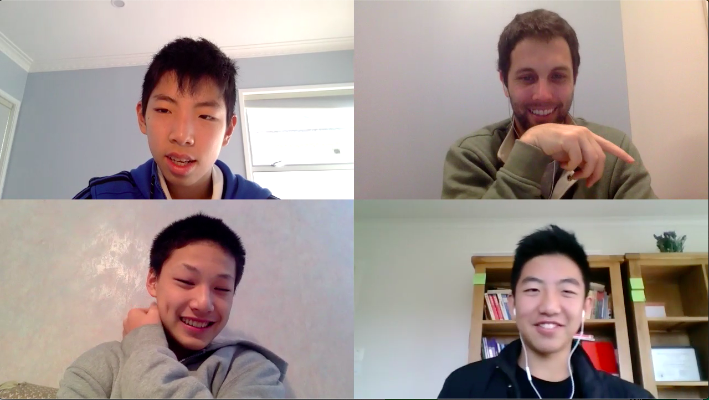

Personalized Online Learning for Students Ages 10-17
Since 2018, five students and graduates from the Harvard Graduate School of Education have worked together to provide high quality learning programs to students online with the Students for Students (SFS) program.
We offer customized small scale learning experiences (3-5 students per group) focused on supporting student's:
- Reading, Writing, Analysis and International Inquiry
- Creative Writing
- Persuasive Writing
- Public Speaking and Debate
- Digital Literacy
On average, after nine classes, among many language and learning benefits, we've seen students’ self-reported confidence in exploring and discussing international topics in English improve by 35%, and students’ enjoyment of English study improve by 22%.

Iris SFS Student
"In fact, I enjoy the happiness of figuring things out myself, and then share my ideas with different kinds of people. When you’re chatting with them, you won’t get that strange ‘talkin’-to-a-teacher’ feeling . . the teachers provides you with experiences by being a student, asking questions, exploring with you, hearing your opinions. They could always turn boring subjects (like essay writing) into humorous experiences. . . Attending the SFS classes, not only my reading, analyzing and writing skills were improved, I also learned how to find appropriate ways to reach my destinations. And of course, I made a lot of friends.”
Students for Students is a charitably-centered organization, donating 100% of profits to charity (to date we have donated $29,000). Past recipients include: The International Rescue Committee (Refugee Education), the National Alliance on Mental Illness (NAMI), Girl Up and Dandelion Middle School.
Class Sign Up
Sign up and/or receive more info about our classes.
Email: studentsforstudents.uschina at gmail.com
Good Bee Education LLC